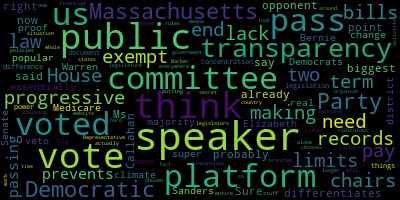

[Callahan]: What is the biggest point that differentiates you, Ms. Callahan, from your opponent? Sure. I think I probably already said it, but I'll say it again. I think right now, the Massachusetts Democratic Party platform is very progressive. It is essentially the Bernie Sanders, Elizabeth Warren platform. It is very popular in the district. We have a veto proof super majority of Democrats in the House and Senate and we cannot pass. Medicare for all we cannot pass real climate change legislation, we can't we can't pass any of the things that are in that document, and it's because there is a concentration of power in the hands of the speaker. And that is the big difference between. the two of us. Representative Barber voted to end term limits for the speaker. I would vote to have term limits. She voted to increase the pay for the speaker and the pay for all of the committee chairs and co-chairs that the speaker alone chooses. I think that the speaker should not be choosing those. I think they should be chosen by a secret vote for the entire house. She voted against transparency, like making committee votes public. making committee votes that are public putting them on the website, all of that stuff we need transparency everywhere. In fact, we actually need for our legislature to no longer be exempt from public records law, we are one of only two states in the country where all three branches of government are exempt from public records law, and that is ridiculous. The lack of transparency, the lack of time for legislators to look at bills, means that we can't organize as activists around those bills either. And this whole situation, the culture, the rules, the financial incentives, prevents us from passing progressive policies, prevents us from passing the Massachusetts Democratic Party platform, and I will work very hard to end that.
|
total time: 2.13 minutes total words: 319  |
|||
{kind=link}